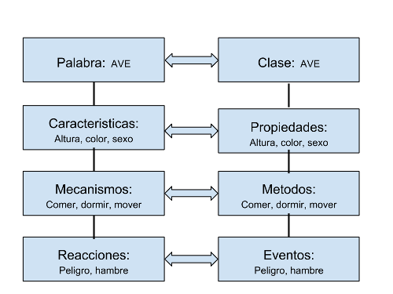

Programacion Orientada a Objetos
Estructura de la Clase
La POO no es un lenguaje de programacion, ni una tecnologia especifica, si no tan solo una manera de programar o lo que se conoce como un paradigma o modelo de programacion
Si bien no existe una definicion exacta acordada podemos definir las siguientes caracteristicas básicas
- Abstracción: Dividir el problema en partes mas pequeñas
- Encapsulación: Ocultar los procesos internos que se necesitan para hacer las funciones indicadas
- Herencia: Definir clases a partir de otras mas generales
Clases
La funcion de las clases es tratar de definir estos objectos a traves de las caracteristicas (propiedades), los mecanismos especificos (metodos) y las reacciones (eventos).
Instancias
Una clase es la definicion del objecto, pero no el objeto en sí.
El objeco real es lo que se conoce como instancia